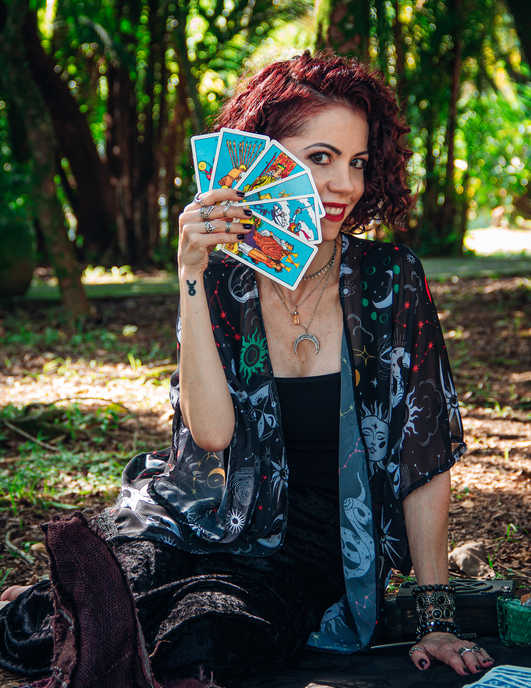

Quem sou eu
Olá! Eu sou a Samaa, a taróloga e a desenvolvedora por trás deste refúgio. Minha jornada com o Tarot
começou no silêncio do estudo e na busca por respostas que fizessem sentido ao interpretar.
Este site é para quem busca um refúgio em meio ao barulho. É o resultado do meu próprio movimento: a
escolha de trocar a agitação das redes sociais pela profundidade do atendimento individual e do
desenvolvimento técnico. Acredito que a verdadeira sabedoria não está na rapidez de um vídeo de 15
segundos, mas na pausa necessária para olhar para dentro.
O que faz este espaço ser
diferente?
Unindo minha experiência com o Tarot e refletindo sobre as emoções que mais nos afligem, criei um
método focado na reconexão emocional. Aqui, o Tarot não é usado para previsões, mas para acolhimento
na hora que precisamos. As 38 emoções mapeadas neste portal foram cuidadosamente associadas a
mensagens que buscam iluminar o seu "agora".
Meu objetivo é que, ao entrar aqui, você sinta que encontrou um refúgio — um lugar onde a sua
resposta à "Como você está se sentindo hoje?" recebe a atenção e o respeito que merece.
Se as mensagens deste portal ressoaram com você, saiba que estou à disposição para mergulharmos
juntos em uma leitura pessoal e exclusiva, onde as energias são lidas com o tempo e a sensibilidade
que a sua história exige. Atendo às suas necessidades com perguntas específicas, garantindo que você
receba orientações relevantes e aplicáveis.
Atendimento de Tarot Online para todo o Brasil e exterior. Ancorada na energia caiçara de Santos/SP.